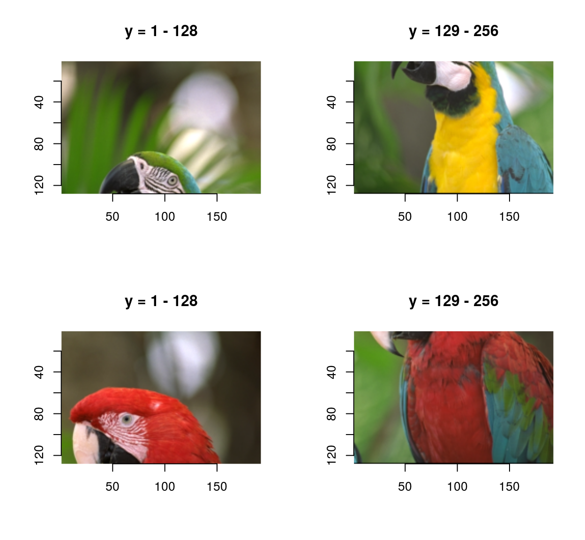
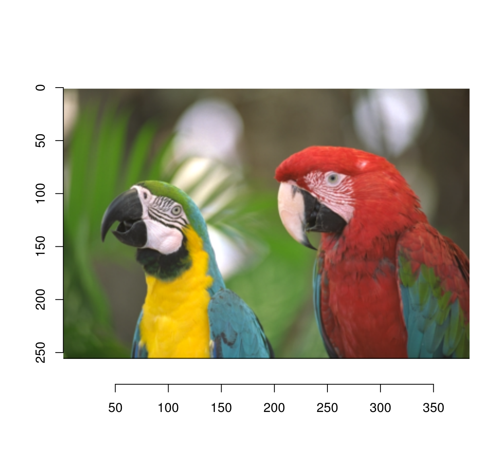
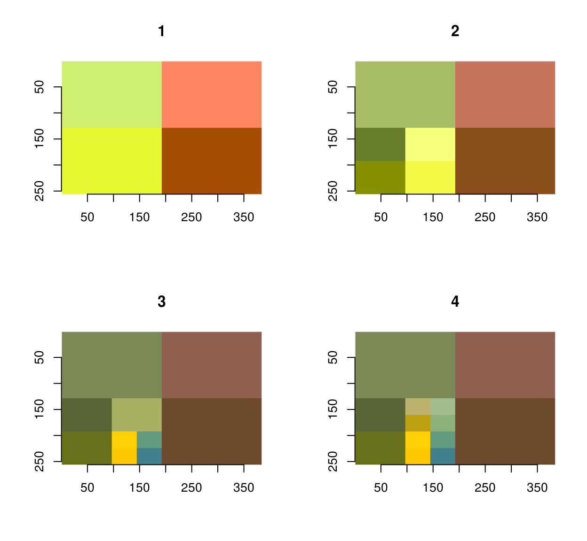
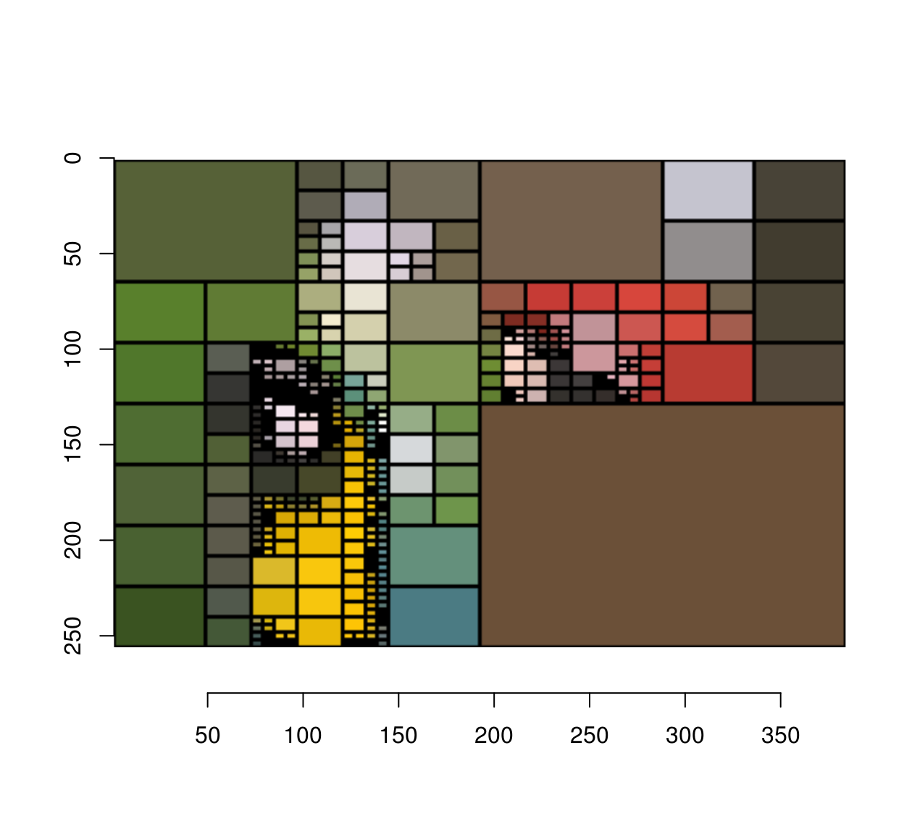

Quad-trees
Simon Barthelmé (GIPSA-lab, CNRS)
The following is a implemention in imager of Quads by Michael Fogleman. It illustrates the use of imager, purrr and recursion to work with recursive data structures.

A quadtree is a recursive data-structure that subdivides an image into four quadrants, which can themselves be subdivided into sub-quadrants, etc. For compression, we build a quadtree such that image regions that are unhomogeneous are divided more finely. Homogenous image regions are simply assigned their mean colour.
Subdividing can be done using “imsplit”
library(imager)
library(purrr)
im <- load.example('parrots') %>% imresize(.5)
#Divide along x, then y
qsplit <- function(im)
{
imsplit(im,"x",2) %>% map(~ imsplit(.,"y",2)) %>%
flatten
}
qsplit(im) %>% as.imlist %>% plot
The inverse operation uses “imappend”:
qunsplit <- function(l)
{
list(l[1:2],l[3:4]) %>% map(~ imappend(.,"y")) %>% imappend("x")
}
qsplit(im) %>% qunsplit %>% plot
The algorithm works by iterative refinement: at each iteration we find the least homogeneous region, and split it into four quadrants. Homogeneity is measured by the standard deviation of pixel values:
#Max std. dev across channels
imsd <- function(im)
{
imsplit(im,"c") %>% map_dbl(sd) %>% max
}The refinement function is recursive. It traverses the tree depth-first, looking for the least-homogeneous leaf (leaves are image regions).
refine <- function(l)
{
if (is.cimg(l)) #We have a leaf
{
qs <- qsplit(l) #Split
if (any(dim(l)[1:2] <= 4)) #Quadrants are very small
{
qs$sds <- rep(0,4) #Prevent further refinement
}
else
{
qs$sds <- map_dbl(qs,imsd) #Store std.dev of children
}
qs
}
else #Not a leaf, explore further
{
indm <- which.max(l$sds) #Find child with max. std. dev
l[[indm]] <- refine(l[[indm]]) #Refine
l$sds[indm] <- max(l[[indm]]$sds) #Update std. dev
l
}
}Refinement will produce ever-deeper trees. To visualise them, we need to reconstruct an image from the tree. That’s the job of rebuild, which again is recursive:
rebuild <- function(l,borders=FALSE)
{
map(l[-5],~ if (is.cimg(.)) meanim(.,borders=borders) else rebuild(.,borders=borders)) %>% qunsplit
}
#Produce an image that's just the average of image im
#Optionally, add borders
meanim <- function(im,borders=FALSE)
{
im <- imsplit(im,"c") %>% map(~ 0*. + mean(.)) %>% imappend("c")
if (borders)
{
im[px.borders(im)] <- 0
}
im
}The way rebuild works is as follows: look at the current node. If the node is a leaf, approximate it. If the node has children, call rebuild on the children and recombine them using qunsplit.
iter.refine <- function(im,nIter)
{
for (i in seq_len(nIter)) { im <- refine(im) };
im
}
#The first four iterations of the process
map_il(1:4,~ iter.refine(im,.) %>% rebuild) %>% plot
#After 200 iterations
iter.refine(im,200) %>% rebuild(borders=T) %>% plot
The next image is an animation showing the first 1,000 steps of the process: